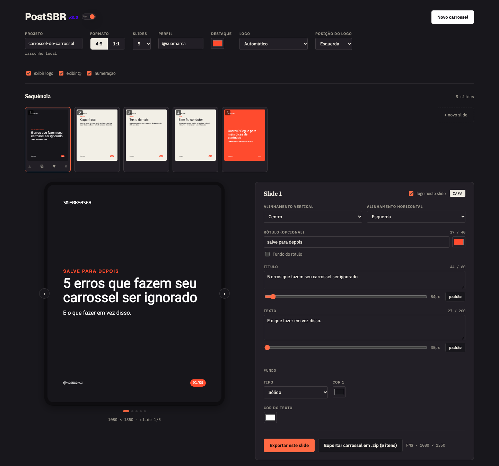

Criador de carrosséis para Instagram — como montar, ajustar e exportar seus slides.
Endereço da ferramenta: carrossel.sneakersbr.co · Não precisa de instalação. Funciona no navegador; recomendamos o Google Chrome no computador.
A tela tem cinco áreas: as configurações gerais do carrossel no topo, a sequência de slides, o preview do slide, o painel de edição e os botões de exportação.

1 2 3 4 5| Campo | O que faz |
|---|---|
| Projeto | Nome do carrossel. É usado no nome dos arquivos exportados. |
| Formato | 4:5 (1080 × 1350 px, retrato — padrão do feed) ou 1:1 (1080 × 1080 px, quadrado). |
| Slides | Quantidade de slides, de 2 a 20. Reduzir a quantidade remove slides do final. |
| Perfil | O @ que aparece no rodapé de cada slide. |
| Destaque | Cor de destaque da marca (rótulos, numeração). |
| Logo | Nenhum, Automático (usa o logo branco em fundos escuros e o preto em fundos claros), ou logo preto/branco fixo. |
| Posição do logo | Esquerda, centro ou direita, no topo do slide. |
| exibir logo / exibir @ / numeração | Liga ou desliga, em todos os slides, o logo, o @ do rodapé e a numeração (01/05). O alinhamento do texto não muda ao ligar ou desligar o @ e a numeração. |
| Interruptor sol/lua | Alterna entre o modo claro e o escuro da ferramenta (não muda os slides). A escolha fica salva. |
| Novo carrossel | Apaga o rascunho salvo e recomeça a partir do exemplo. A ferramenta pede confirmação antes. |
| Campo | O que faz |
|---|---|
| logo neste slide | Mostra ou esconde o logo só neste slide (ex.: logo apenas na capa). Precisa de “exibir logo” ligado no topo. |
| Alinhamento vertical / horizontal | Posição do bloco de texto: topo, centro ou base; esquerda ou centro. |
| Rótulo (opcional) | Linha curta em letras maiúsculas acima do título (ex.: “SALVE PARA DEPOIS”). O quadrado de cor ao lado muda a cor do texto do rótulo. |
| Fundo do rótulo | Marque para colocar uma caixa colorida atrás do rótulo, do tamanho exato do texto. Escolha a cor da caixa no seletor que aparece ao lado. |
| Título e Texto | Texto principal e texto de apoio, cada um com controle de tamanho (padrão volta ao original). “Cor do texto”, mais abaixo, vale para os dois. |
Cada campo tem um contador (ex.: “44 / 60”) que fica na cor de destaque ao passar do limite — é só um aviso. O que passar das linhas permitidas é cortado com “…”; antes disso a fonte diminui sozinha, até o menor tamanho da faixa.
| Capa e fechamento | Conteúdo | |
|---|---|---|
| Rótulo | 40 caracteres · 1 linha | 40 caracteres · 1 linha |
| Título | 60 caracteres · até 3 linhas | 45 caracteres · até 2 linhas |
| Texto | 200 caracteres · até 3 linhas | 250 caracteres · até 5 linhas |
| Tamanho do título | 82 a 135 px | 80 a 100 px |
| Tamanho do texto | 35 a 42 px | 35 a 42 px |
Em Fundo → Tipo escolha uma das quatro opções. Cada slide tem o seu próprio fundo.
| Tipo | Como usar |
|---|---|
| Sólido | Uma cor (Cor 1). |
| Gradiente | Degradê na diagonal entre duas cores (Cor 1 e Cor 2). |
| Imagem | Uma ou mais fotos. Veja a seção abaixo. |
| Vídeo | Vídeo como fundo. Veja a seção 7. |
| Botão | Resultado |
|---|---|
| Exportar este slide | Baixa o slide selecionado: PNG (1080 × 1350 ou 1080 × 1080) ou MP4 se o fundo for vídeo. |
| Exportar carrossel em .zip | Baixa todos os slides em um único arquivo .zip, numerados na ordem da sequência (ex.: meu-projeto-01.png). Slides com vídeo saem em MP4. |
A linha ao lado dos botões mostra o formato e o tamanho do arquivo. Durante a exportação de vídeos aparece o andamento; aguarde terminar antes de fechar a página. Depois é só postar os arquivos no Instagram.
| Problema | Solução |
|---|---|
| O logo não aparece em um slide. | Confira “exibir logo” no topo, “logo neste slide” no painel e se o menu Logo não está em “Nenhum”. |
| O texto ficou cortado com “…”. | Ele passou do limite de linhas do slide. Veja o contador ao lado do campo e encurte o título ou o texto. |
| O texto ficou pequeno. | Quando não cabe, a fonte diminui sozinha até o menor tamanho da faixa (seção 5). Encurte o texto para ele voltar ao tamanho escolhido. |
| O texto está difícil de ler sobre a foto. | Aumente a “Opacidade do preto sobre o fundo” ou mude a cor do texto. |
| Quero o logo só na capa. | Desmarque “logo neste slide” nos demais slides. |
| O vídeo sumiu ao reabrir a página. | Vídeos não ficam no rascunho. Envie o arquivo novamente. |
| Não consigo arrastar os slides no celular. | O arrastar não funciona por toque; use as setas ▲ ▼ das miniaturas. |
| Quero recomeçar do zero. | Clique em “Novo carrossel” (canto superior direito) e confirme. |